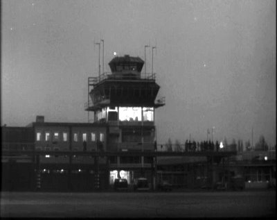
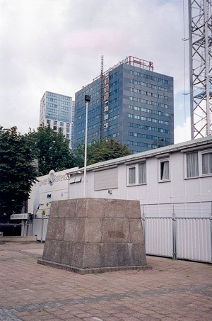
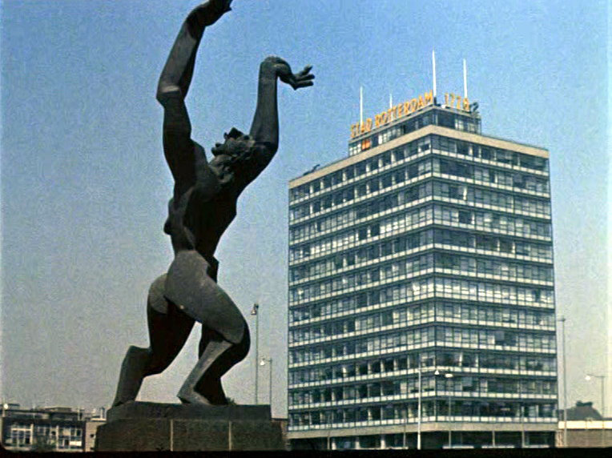
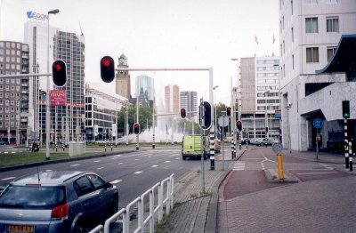
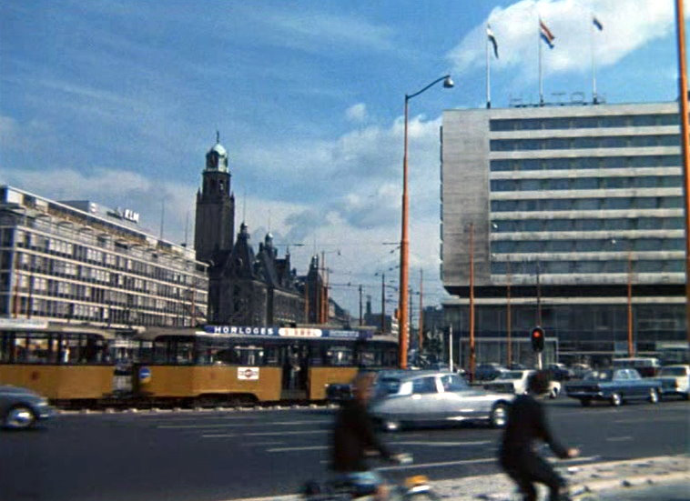
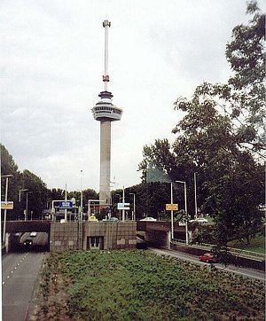

Broekzijdse Mill, Gein Noord

THE SAINT: The Angel's Eye (Leslie Norman:
March 1966)
Malone drives Mable Upwater to a windmill outside Amsterdam where her
father is being held.
Identified by Sietse Postma, April 2022
Amsterdam

GIDEON’S WAY: The Thin Red Line (Cyril Frankel: March 1965)
Detective Chief Inspector David Keen is sent to vist Krootnings in Amsterdam to ask about the stolen silver found there.
DANGER MAN: The Man Who Wouldn’t Talk (Michael Truman: September 1965)
Drake arrives at Istanbul Airport
THE SAINT: The Angel's Eye (Leslie Norman:
March 1966)
The plane carrying Simon Templar and the Upwaters arrives in Amsterdam.
THE SAINT: The Angel's Eye (Leslie Norman:
March 1966)
Establishing shot of Amsterdam as Simon and Tom, and Mable Upwater
return to their hotel after a night on the town. Simon Templar and
Mable Upwater go out for a meal the night he is to steal the diamond.
THE SAINT: The Angel's Eye (Leslie Norman:
March 1966)
Simon Templar takes Mable Upwater for a guided tour of the canals of
Amsterdam.
THE SAINT: The Angel's Eye (Leslie Norman:
March 1966)
After their trip on the canal Simon Templar points out Rembrandt's
House to Mable Upwater.
THE SAINT: The Angel's Eye (Leslie Norman:
March 1966)
Malone and Corbett follow Simon Templar and Mable and Tom Upwater as
through Amsterdam to their meeting with the jeweller. Simon is soon
made aware of the car following them over the canal bridges.
GIDEON’S WAY: The Thin Red Line (Cyril
Frankel: March 1965)
Establishing shot of Amsterdam (Nassaukade from Leidsekade/Marnixstraat).
(Identified by Rob Burnham, June 2023)
THE SAINT: The Angel's Eye (Leslie Norman:
March 1966)
Simon Templar takes Mable Upwater for a guided tour of the canals of
Amsterdam (they pass The Holland Casino).
DANGER MAN: Sting in the Tail (Peter
Yartes: 1964)
An assassin breaks into the Paris hotel (Stadsschouwburg Theatre) of
the young Shah of Assini and shoots him.
GIDEON’S WAY: The Thin Red Line (Cyril
Frankel: March 1965)
Establishing shot of Amsterdam (favouring Leidseplein 2).
(Identified by Rob Burnham, June 2023)
THE SAINT: The Angel's Eye (Leslie Norman:
March 1966)
Simon Templar takes Mable Upwater for a guided tour of the canals of
Amsterdam. The guide on the boat points out the Mint Tower.
THE SAINT: The Angel's Eye (Leslie Norman:
March 1966)
Simon Templar takes Mable Upwater for a guided tour of the canals of
Amsterdam. The guide on the boat points out Ann Frank's house
(Prinsengracht 267).
THE SAINT: The Angel's Eye (Leslie Norman:
March 1966)
Malone and Corbett follow Simon Templar and Mable and Tom Upwater as
through Amsterdam to their meeting with the jeweller who is to cut the
Angel's Eye.
THE SAINT: The Angel's Eye (Leslie Norman:
March 1966)
After dropping Tom Upwater off, Simon and Mable Upwater attempt to
loose the car following them in the narrow streets.
THE SAINT: The Angel's Eye (Leslie Norman:
March 1966)
Malone and Corbett follow Simon Templar and Mable and Tom Upwater as
through Amsterdam to their meeting with the jeweller who is to cut the
Angel's Eye (Rokin looking into Dam Square).
THE CHAMPIONS: The Invisible Man (Cyril
Frankel: )
When Hallam telephones his contact, Van Velden, in Rotterdam, we see
various buildings in the city (World Backgrounds 3357).


Photo: Jan van Leeuwen
First we see an image of 'De Verwoeste Stad' sculpted by Zadkine (it was moved approximately 60 m from its original position in 1975 and removed in 2005-2007 for restoration). Behind the statue an insurance company named Stad Rotterdam is visible (the building has been renovated and belongs to RABO - Bank).


Photo: Jan van Leeuwen
After that we see an image of the centre of the city (World Backgrounds 5225), the 'Hofplein' (a roundabout with a fountain in the centre. On the right is Hilton. The dark building in the centre is City Hall).

Craig
Sterling gets a lift from a lorry-driver and arrives in Rotterdam
(World Backgrounds 5223). The driver takes him to the docks (first we
see the Euromast, after that the camera pans to follow the lorry to the
entrance to the Maastunnel, the tunnel to the southside of Rotterdam).
Spotted by Jan van Leeuwen, August 2003